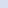

Create: Train Utilities附属模组
无框玻璃、列车线路标、车门零件——把 Create 的列车做得更像真的。
这是什么
给列车党补的三样东西：能看穿的玻璃、能挂牌的线路、能拆装的车门。
无框玻璃（Frameless Glass）用来做车厢观景窗，不再被边框打断；线路标块是一整套各国铁路的线路牌（DB、SNCF、PKP、NS、SBB…），贴在站台或车身上；零件部分（Processing Unit / Sound Unit / Transistor / Rubber Seal / Speaker Membrane / 各种 Door Prototype）是车门和喇叭的中间件。
规模：11 个零件、181 个方块、7 条配方。方块太多，这里按「零件 / 线路标 / 其它方块」分组平铺，不再逐件建详情页。
零件
未完成的处理单元trainutilities:incomplete_processing_unit
未完成的车门原型trainutilities:incomplete_prototype_door_db
未完成的滑动门原型trainutilities:incomplete_prototype_door_sf
未完成的声音单元trainutilities:incomplete_sound_unit
滑动门原型trainutilities:prototype_door_sf
线路标（20）
PKP Intercity 车门（蓝色）trainutilities:door_pkp_ic_blue
打开菜单以 _更改_ _车门音效_。trainutilities:door_pkp_ic_blue.tooltip.behaviour1
主手为空时，按住 Shift 右键。trainutilities:door_pkp_ic_blue.tooltip.condition1
在 _列车_ 或 _电梯_ 上使用，以获得带有 _逼真音效_ 的 _逼真车门_。trainutilities:door_pkp_ic_blue.tooltip.summary
PKP Intercity 车门（白色）trainutilities:door_pkp_ic_white
打开菜单以 _更改_ _车门音效_。trainutilities:door_pkp_ic_white.tooltip.behaviour1
主手为空时，按住 Shift 右键。trainutilities:door_pkp_ic_white.tooltip.condition1
在 _列车_ 或 _电梯_ 上使用，以获得带有 _逼真音效_ 的 _逼真车门_。trainutilities:door_pkp_ic_white.tooltip.summary
S-Bahn 车门（VRR 涂装）trainutilities:door_sbahn_vrr
打开菜单以 _更改_ _车门音效_。trainutilities:door_sbahn_vrr.tooltip.behaviour1
主手为空时，按住 Shift 右键。trainutilities:door_sbahn_vrr.tooltip.condition1
在 _列车_ 或 _电梯_ 上使用，以获得带有 _逼真音效_ 的 _逼真车门_。trainutilities:door_sbahn_vrr.tooltip.summary
PKP Intercity 方块（蓝色）trainutilities:pkp_block_blue

PKP Intercity 方块（白色）trainutilities:pkp_block_white
PKP Intercity 色带方块（下，蓝色）trainutilities:pkp_ic_bottom_blue_line_block
PKP Intercity 色带方块（下，绿色）trainutilities:pkp_ic_bottom_green_line_block
PKP Intercity 色带方块（下，黄色）trainutilities:pkp_ic_bottom_yellow_line_block
PKP Intercity 色带方块（上，蓝色）trainutilities:pkp_ic_top_blue_line_block
PKP Intercity 色带方块（上，绿色）trainutilities:pkp_ic_top_green_line_block
PKP Intercity 色带方块（上，黄色）trainutilities:pkp_ic_top_yellow_line_block
其它方块
DB IC(E) 色带方块（下）trainutilities:bottom_redline_block
布达佩斯方块（黑色）trainutilities:budapest_block_black
布达佩斯方块（黄色）trainutilities:budapest_block_yellow
瑞士式站台方块trainutilities:ch_platform_block
CIS 阿门多夫方块（类型 1）trainutilities:cis_amendorf_block_1
CIS 阿门多夫方块（类型 2）trainutilities:cis_amendorf_block_2
德式站台方块trainutilities:de_platform_block
1996 型车门trainutilities:door_1996_stock
打开菜单以 _更改_ _车门音效_。trainutilities:door_1996_stock.tooltip.behaviour1
主手为空时，按住 Shift 右键。trainutilities:door_1996_stock.tooltip.condition1
在 _列车_ 或 _电梯_ 上使用，以获得带有 _逼真音效_ 的 _逼真车门_。trainutilities:door_1996_stock.tooltip.summary
安山合金门trainutilities:door_andesite_alloy
打开菜单以 _更改_ _车门音效_。trainutilities:door_andesite_alloy.tooltip.behaviour1
主手为空时，按住 Shift 右键。trainutilities:door_andesite_alloy.tooltip.condition1
在 _列车_ 或 _电梯_ 上使用，以获得带有 _逼真音效_ 的 _逼真车门_。trainutilities:door_andesite_alloy.tooltip.summary
安山合金门（带窗）trainutilities:door_andesite_alloy_window
打开菜单以 _更改_ _车门音效_。trainutilities:door_andesite_alloy_window.tooltip.behaviour1
主手为空时，按住 Shift 右键。trainutilities:door_andesite_alloy_window.tooltip.condition1
在 _列车_ 或 _电梯_ 上使用，以获得带有 _逼真音效_ 的 _逼真车门_。trainutilities:door_andesite_alloy_window.tooltip.summary
CAF Urbos 3 车门trainutilities:door_caf_urbos_3
打开菜单以 _更改_ _车门音效_。trainutilities:door_caf_urbos_3.tooltip.behaviour1
主手为空时，按住 Shift 右键。trainutilities:door_caf_urbos_3.tooltip.condition1
在 _列车_ 或 _电梯_ 上使用，以获得带有 _逼真音效_ 的 _逼真车门_。trainutilities:door_caf_urbos_3.tooltip.summary
CIS 阿门多夫车门（类型 1）trainutilities:door_cis_amendorf_1
CIS 阿门多夫车门（类型 2）trainutilities:door_cis_amendorf_2
350 型车门trainutilities:door_class_350
打开菜单以 _更改_ _车门音效_。trainutilities:door_class_350.tooltip.behaviour1
主手为空时，按住 Shift 右键。trainutilities:door_class_350.tooltip.condition1
在 _列车_ 或 _电梯_ 上使用，以获得带有 _逼真音效_ 的 _逼真车门_。trainutilities:door_class_350.tooltip.summary
390 型车门trainutilities:door_class_390
打开菜单以 _更改_ _车门音效_。trainutilities:door_class_390.tooltip.behaviour1
主手为空时，按住 Shift 右键。trainutilities:door_class_390.tooltip.condition1
在 _列车_ 或 _电梯_ 上使用，以获得带有 _逼真音效_ 的 _逼真车门_。trainutilities:door_class_390.tooltip.summary
450 型车门trainutilities:door_class_450
打开菜单以 _更改_ _车门音效_。trainutilities:door_class_450.tooltip.behaviour1
主手为空时，按住 Shift 右键。trainutilities:door_class_450.tooltip.condition1
在 _列车_ 或 _电梯_ 上使用，以获得带有 _逼真音效_ 的 _逼真车门_。trainutilities:door_class_450.tooltip.summary
电梯门（玻璃）trainutilities:door_elev_glass
打开菜单以 _更改_ _车门音效_。trainutilities:door_elev_glass.tooltip.behaviour1
主手为空时，按住 Shift 右键。trainutilities:door_elev_glass.tooltip.condition1
在 _列车_ 或 _电梯_ 上使用，以获得带有 _逼真音效_ 的 _逼真车门_。trainutilities:door_elev_glass.tooltip.summary
电梯门（金属）trainutilities:door_elev_metal
打开菜单以 _更改_ _车门音效_。trainutilities:door_elev_metal.tooltip.behaviour1
主手为空时，按住 Shift 右键。trainutilities:door_elev_metal.tooltip.condition1
在 _列车_ 或 _电梯_ 上使用，以获得带有 _逼真音效_ 的 _逼真车门_。trainutilities:door_elev_metal.tooltip.summary
Stadler Flirt 3 XL 车门（VRR 涂装）trainutilities:door_flirt
打开菜单以 _更改_ _车门音效_。trainutilities:door_flirt.tooltip.behaviour1
主手为空时，按住 Shift 右键。trainutilities:door_flirt.tooltip.condition1
在 _列车_ 或 _电梯_ 上使用，以获得带有 _逼真音效_ 的 _逼真车门_。trainutilities:door_flirt.tooltip.summary
Stadler Flirt 3 XL 车门（VIAS 涂装）trainutilities:door_flirt_vias
打开菜单以 _更改_ _车门音效_。trainutilities:door_flirt_vias.tooltip.behaviour1
主手为空时，按住 Shift 右键。trainutilities:door_flirt_vias.tooltip.condition1
在 _列车_ 或 _电梯_ 上使用，以获得带有 _逼真音效_ 的 _逼真车门_。trainutilities:door_flirt_vias.tooltip.summary
Desiro HC 车门（GoAhead 涂装）trainutilities:door_goahead_desiro
打开菜单以 _更改_ _车门音效_。trainutilities:door_goahead_desiro.tooltip.behaviour1
主手为空时，按住 Shift 右键。trainutilities:door_goahead_desiro.tooltip.condition1
在 _列车_ 或 _电梯_ 上使用，以获得带有 _逼真音效_ 的 _逼真车门_。trainutilities:door_goahead_desiro.tooltip.summary
DB IC 1 车门trainutilities:door_ic
打开菜单以 _更改_ _车门音效_。trainutilities:door_ic.tooltip.behaviour1
主手为空时，按住 Shift 右键。trainutilities:door_ic.tooltip.condition1
在 _列车_ 或 _电梯_ 上使用，以获得带有 _逼真音效_ 的 _逼真车门_。trainutilities:door_ic.tooltip.summary
DB IC2 车门trainutilities:door_ic2
打开菜单以 _更改_ _车门音效_。trainutilities:door_ic2.tooltip.behaviour1
主手为空时，按住 Shift 右键。trainutilities:door_ic2.tooltip.condition1
在 _列车_ 或 _电梯_ 上使用，以获得带有 _逼真音效_ 的 _逼真车门_。trainutilities:door_ic2.tooltip.summary
DB ICE 车门（下）trainutilities:door_ice
打开菜单以 _更改_ _车门音效_。trainutilities:door_ice.tooltip.behaviour1
主手为空时，按住 Shift 右键。trainutilities:door_ice.tooltip.condition1
在 _列车_ 或 _电梯_ 上使用，以获得带有 _逼真音效_ 的 _逼真车门_。trainutilities:door_ice.tooltip.summary
DB ICE 现代车门trainutilities:door_ice_modern
打开菜单以 _更改_ _车门音效_。trainutilities:door_ice_modern.tooltip.behaviour1
主手为空时，按住 Shift 右键。trainutilities:door_ice_modern.tooltip.condition1
在 _列车_ 或 _电梯_ 上使用，以获得带有 _逼真音效_ 的 _逼真车门_。trainutilities:door_ice_modern.tooltip.summary
DB ICE 现代车门（上）trainutilities:door_ice_modern_top
打开菜单以 _更改_ _车门音效_。trainutilities:door_ice_modern_top.tooltip.behaviour1
主手为空时，按住 Shift 右键。trainutilities:door_ice_modern_top.tooltip.condition1
在 _列车_ 或 _电梯_ 上使用，以获得带有 _逼真音效_ 的 _逼真车门_。trainutilities:door_ice_modern_top.tooltip.summary
DB ICE 车门（上）trainutilities:door_ice_top
打开菜单以 _更改_ _车门音效_。trainutilities:door_ice_top.tooltip.behaviour1
主手为空时，按住 Shift 右键。trainutilities:door_ice_top.tooltip.condition1
在 _列车_ 或 _电梯_ 上使用，以获得带有 _逼真音效_ 的 _逼真车门_。trainutilities:door_ice_top.tooltip.summary
工业铁门trainutilities:door_industrial_iron
打开菜单以 _更改_ _车门音效_。trainutilities:door_industrial_iron.tooltip.behaviour1
主手为空时，按住 Shift 右键。trainutilities:door_industrial_iron.tooltip.condition1
在 _列车_ 或 _电梯_ 上使用，以获得带有 _逼真音效_ 的 _逼真车门_。trainutilities:door_industrial_iron.tooltip.summary
工业铁门（带窗）trainutilities:door_industrial_iron_window
打开菜单以 _更改_ _车门音效_。trainutilities:door_industrial_iron_window.tooltip.behaviour1
主手为空时，按住 Shift 右键。trainutilities:door_industrial_iron_window.tooltip.condition1
在 _列车_ 或 _电梯_ 上使用，以获得带有 _逼真音效_ 的 _逼真车门_。trainutilities:door_industrial_iron_window.tooltip.summary
洁净铁门trainutilities:door_iron_clean
打开菜单以 _更改_ _车门音效_。trainutilities:door_iron_clean.tooltip.behaviour1
主手为空时，按住 Shift 右键。trainutilities:door_iron_clean.tooltip.condition1
在 _列车_ 或 _电梯_ 上使用，以获得带有 _逼真音效_ 的 _逼真车门_。trainutilities:door_iron_clean.tooltip.summary
锈蚀铁门trainutilities:door_iron_rusty
打开菜单以 _更改_ _车门音效_。trainutilities:door_iron_rusty.tooltip.behaviour1
主手为空时，按住 Shift 右键。trainutilities:door_iron_rusty.tooltip.condition1
在 _列车_ 或 _电梯_ 上使用，以获得带有 _逼真音效_ 的 _逼真车门_。trainutilities:door_iron_rusty.tooltip.summary
伦敦 1973 型车门trainutilities:door_london_1973_stock
打开菜单以 _更改_ _车门音效_。trainutilities:door_london_1973_stock.tooltip.behaviour1
主手为空时，按住 Shift 右键。trainutilities:door_london_1973_stock.tooltip.condition1
在 _列车_ 或 _电梯_ 上使用，以获得带有 _逼真音效_ 的 _逼真车门_。trainutilities:door_london_1973_stock.tooltip.summary
伊丽莎白线车门trainutilities:door_london_el
打开菜单以 _更改_ _车门音效_。trainutilities:door_london_el.tooltip.behaviour1
主手为空时，按住 Shift 右键。trainutilities:door_london_el.tooltip.condition1
在 _列车_ 或 _电梯_ 上使用，以获得带有 _逼真音效_ 的 _逼真车门_。trainutilities:door_london_el.tooltip.summary
伦敦 地上铁 车门trainutilities:door_london_overground
打开菜单以 _更改_ _车门音效_。trainutilities:door_london_overground.tooltip.behaviour1
主手为空时，按住 Shift 右键。trainutilities:door_london_overground.tooltip.condition1
在 _列车_ 或 _电梯_ 上使用，以获得带有 _逼真音效_ 的 _逼真车门_。trainutilities:door_london_overground.tooltip.summary
伦敦 S7 型车门trainutilities:door_london_s7_stock
打开菜单以 _更改_ _车门音效_。trainutilities:door_london_s7_stock.tooltip.behaviour1
主手为空时，按住 Shift 右键。trainutilities:door_london_s7_stock.tooltip.condition1
在 _列车_ 或 _电梯_ 上使用，以获得带有 _逼真音效_ 的 _逼真车门_。trainutilities:door_london_s7_stock.tooltip.summary
ÖBB Railjet 车门trainutilities:door_railjet
打开菜单以 _更改_ _车门音效_。trainutilities:door_railjet.tooltip.behaviour1
主手为空时，按住 Shift 右键。trainutilities:door_railjet.tooltip.condition1
在 _列车_ 或 _电梯_ 上使用，以获得带有 _逼真音效_ 的 _逼真车门_。trainutilities:door_railjet.tooltip.summary
Desiro HC 车门（RRX 涂装）trainutilities:door_rrx
打开菜单以 _更改_ _车门音效_。trainutilities:door_rrx.tooltip.behaviour1
主手为空时，按住 Shift 右键。trainutilities:door_rrx.tooltip.condition1
在 _列车_ 或 _电梯_ 上使用，以获得带有 _逼真音效_ 的 _逼真车门_。trainutilities:door_rrx.tooltip.summary
S-Bahn 车门（科隆风格）trainutilities:door_sbahn_cologne
打开菜单以 _更改_ _车门音效_。trainutilities:door_sbahn_cologne.tooltip.behaviour1
主手为空时，按住 Shift 右键。trainutilities:door_sbahn_cologne.tooltip.condition1
在 _列车_ 或 _电梯_ 上使用，以获得带有 _逼真音效_ 的 _逼真车门_。trainutilities:door_sbahn_cologne.tooltip.summary
去皮云杉木门trainutilities:door_stripped_spruce
打开菜单以 _更改_ _车门音效_。trainutilities:door_stripped_spruce.tooltip.behaviour1
主手为空时，按住 Shift 右键。trainutilities:door_stripped_spruce.tooltip.condition1
在 _列车_ 或 _电梯_ 上使用，以获得带有 _逼真音效_ 的 _逼真车门_。trainutilities:door_stripped_spruce.tooltip.summary
纽约地铁车门trainutilities:door_sw_nyc
打开菜单以 _更改_ _车门音效_。trainutilities:door_sw_nyc.tooltip.behaviour1
主手为空时，按住 Shift 右键。trainutilities:door_sw_nyc.tooltip.condition1
在 _列车_ 或 _电梯_ 上使用，以获得带有 _逼真音效_ 的 _逼真车门_。trainutilities:door_sw_nyc.tooltip.summary
Talent 1 型车门trainutilities:door_talent1
打开菜单以 _更改_ _车门音效_。trainutilities:door_talent1.tooltip.behaviour1
主手为空时，按住 Shift 右键。trainutilities:door_talent1.tooltip.condition1
在 _列车_ 或 _电梯_ 上使用，以获得带有 _逼真音效_ 的 _逼真车门_。trainutilities:door_talent1.tooltip.summary
Talent 2 型车门trainutilities:door_talent2
打开菜单以 _更改_ _车门音效_。trainutilities:door_talent2.tooltip.behaviour1
主手为空时，按住 Shift 右键。trainutilities:door_talent2.tooltip.condition1
在 _列车_ 或 _电梯_ 上使用，以获得带有 _逼真音效_ 的 _逼真车门_。trainutilities:door_talent2.tooltip.summary
Talent 3 型车门trainutilities:door_talent3
打开菜单以 _更改_ _车门音效_。trainutilities:door_talent3.tooltip.behaviour1
主手为空时，按住 Shift 右键。trainutilities:door_talent3.tooltip.condition1
在 _列车_ 或 _电梯_ 上使用，以获得带有 _逼真音效_ 的 _逼真车门_。trainutilities:door_talent3.tooltip.summary
Stadler Flirt 车门（匈牙利MÁV 涂装）trainutilities:door_ungarian_flirt
打开菜单以 _更改_ _车门音效_。trainutilities:door_ungarian_flirt.tooltip.behaviour1
主手为空时，按住 Shift 右键。trainutilities:door_ungarian_flirt.tooltip.condition1
在 _列车_ 或 _电梯_ 上使用，以获得带有 _逼真音效_ 的 _逼真车门_。trainutilities:door_ungarian_flirt.tooltip.summary
华沙有轨电车车门trainutilities:door_warsaw_tram
打开菜单以 _更改_ _车门音效_。trainutilities:door_warsaw_tram.tooltip.behaviour1
主手为空时，按住 Shift 右键。trainutilities:door_warsaw_tram.tooltip.condition1
在 _列车_ 或 _电梯_ 上使用，以获得带有 _逼真音效_ 的 _逼真车门_。trainutilities:door_warsaw_tram.tooltip.summary
无框玻璃trainutilities:frameless_glass
无框玻璃板trainutilities:frameless_glass_pane
隔音墙trainutilities:iso_wall_block
隔音墙（绿色）trainutilities:iso_wall_block_green
DB IC(E) 斜色带方块（左）trainutilities:leftsloped_redline_block
荷式站台方块trainutilities:nl_platform_block
DB IC(E) 斜色带方块（右）trainutilities:rightsloped_redline_block
DB IC(E) 色带方块（上）trainutilities:top_redline_block